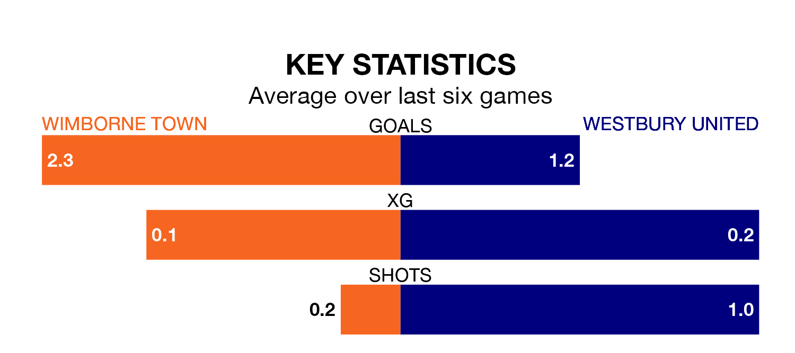

Relegation candidates Westbury United face a challenge away against high-flying Wimborne Town at Cuthbury on Saturday.
Westbury United are 17th in the Southern League Division One – South table, and have picked up six wins and eight draws in their 27 games to date.
Wimborne, meanwhile, are top of the standings with 63 points, having won 19 and drawn six of their first 29 matches.
With 62 goals in 29 games so far this season, Wimborne are the league's highest scorers with 2.1 goals per game. And they are conceding fewer than average, letting in 33 goals at a rate of 1.1 per game.
Westbury, meanwhile, are below average scorers, with 1.3 goals per game, compared to a league average of 1.6. They have conceded 1.8 goals per game.
Town are in fantastic form in the Southern League Division One South, with five wins and a draw from their last six games.
With a win and three draws over that period, United's form is much worse – they have taken six points from 18, compared to the hosts' 16.
In the last three years, Wimborne and Westbury have played each other on three occasions. Westbury won two of them and they drew once.
Their last meeting was on September 26, when Westbury won 3-2 at home.
Wimborne's last match was on March 16, a 2-1 win against Malvern Town.
Westbury drew 0-0 with Bideford last time out, also on March 16.
Updated: 10:19 (UTC), 22/03/24